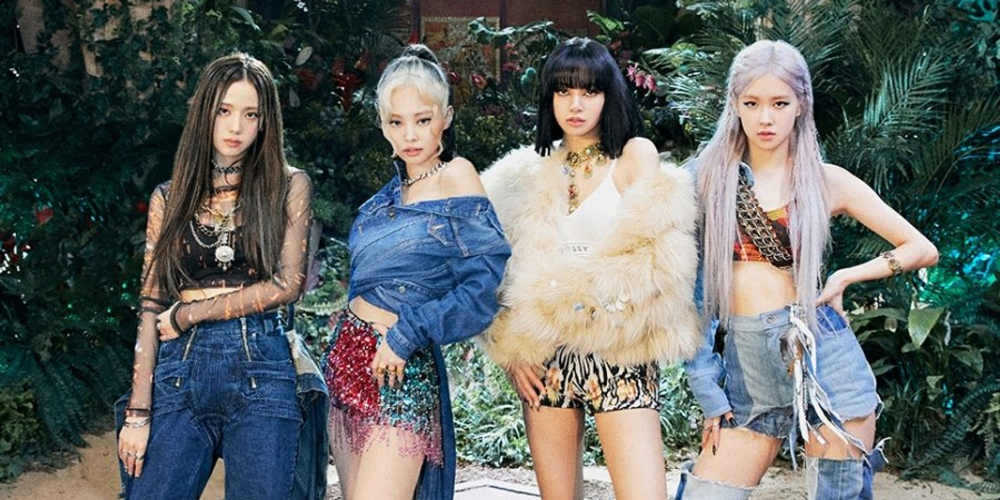
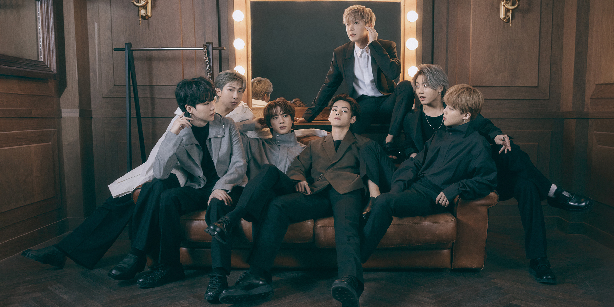

K-pop idol groups are a global phenomenon, with millions of diehard fans all over the world. In the last two decades, the K-pop industry has become a cultural sensation, continuing to grow in popularity as groups like BTS and Blackpink break barriers to achieve worldwide success.
Korean popular music, or K-pop, is a popular genre of music originating from South Korea. K-pop songs contain many musical influences, such as hip-hop, electronic dance, jazz, and rock, performed by groups featuring anywhere from four to 21 members. Aspiring K-pop stars undergo intense training together, learning dance choreography and other skills until they are ready to perform live for the first time. K-pop is one part of the “Korean Wave”—also called Hallyu, a term referring to the popularity of Korean pop culture and Korean TV shows, music, and movies across Asia and other parts of the world.
The origins of modern K-pop date back to 1987, a year of rampant political change that led to South Korea’s democratization. In response to the increase of Western cultural influences during the late ’80s and early ’90s, musical acts began merging elements of rap, rock, and jazz with the contemporary sounds of Korean music. Here’s a look at the evolution of the music genre:
Seo Taiji and the Boys usher in modern K-pop. Modern K-pop emerged in the ’90s when Seo Taiji and the Boys released their breakout track, “I Know,” which topped the Korean music charts for 17 weeks. The band’s sound blended American New Jack Swing with contemporary pop, a sound that eclipsed the slower ballads that were popular in the country at the time. The group cultivated a large following and inspired a slew of bands with a similar sound, giving birth to Idol Culture, an umbrella term for the fandom that follows popular musical acts (also known as Idols) in Japan and Korea.
Late ’90s K-pop boom. After the success of Seo Taiji and the Boys, entertainment agencies began recruiting more young performers for intensive idol training to fill the demand for new talent. This training model was an offshoot of a similar business model used in J-pop, or Japanese pop, leading to the creation of bands like H.O.T., Baby Vox, Fin.K.L, g.o.d., and Sechs Kies.
K-pop goes international. In the 2000s, K-pop continued to grow with bands like Big Bang, who debuted in 2006, receiving waves of critical acclaim. Over the last decade, K-pop became more popular with mainstream Western audiences, largely due to the massive success of BTS (short for Bangtan Boys), a popular boy band that formed in 2010. In 2017, the group was the first in the genre to perform at the American Music Awards, an achievement that introduced them to millions of Western viewers. The group has continued to chart internationally, breaking records, selling out tours, and releasing their first English-language single, “Dynamite,” which topped the Billboard charts upon its release in 2020.
Many K-pop groups found success both within and outside the Korean music industry, amassing large fan bases worldwide. Below is a list of some popular K-pop groups throughout the years:
Formed by YG Entertainment, the four-member K-pop group blends hip-hop, trap, and electronic dance music (EDM) sounds with a trendy, hip-hop inspired look. Their sounds, styling, and lyrics, reflect the group’s signature light and dark themes, like the colors in their name. The group debuted in 2016, and has since become the highest-ranking K-pop girl group on the Billboard Hot 100 chart.
This seven-member K-pop band hit the music scene in 2013, and has since achieved worldwide success. Though they took a while to find their footing, the boys’ pivot to emotional and personal lyrics strengthened their connection with younger audiences. Their worldwide success took off after a 2017 performance at the American Music Awards, leading to their popularity across the United States.
This twelve-member South Korean-Chinese boy band integrates pop, hip-hop, and house music into their catchy melodies. At the end of 2014, they became Japan’s highest-selling artist of the year, and achieved global success by 2017.
Also known as SNSD, this Korean pop group was formed by SM Entertainment in 2002 and features nine members. Though their sound has varied over the years, it is often described as electropop meets bubblegum pop.
Psy is a popular Korean singer and rapper who broke records following the music video’s popularity for his single “Gangnam Style” back in 2013. His lyrics and performances often feature humor and satire.
This five-member girl group features a hybrid sound of jazz and R&B mixed with hip-hop and electronic sounds. In 2020, the prolific girl group’s animated likeness was featured in Trolls World Tour, along with their song, “Russian Roulette.”
Active in the early 1990s until 1996, this group only had three members and focused on experimental Western melodies to fuel their sound. They are often considered some of the earliest pioneers in bringing together the hybrid sound of modern K-pop.
This all-boy group originated in Seoul, South Korea, and is mostly known for their contemporary R&B sound and dance routines, although they also incorporate experimental musical styles in many albums.
Debuting in 2005, Super Junior was founded in Seoul. Their sound often changes between albums, sometimes featuring more of a pop sound, and other times experimenting with percussion and electronic sounds.
Formed by JYP Entertainment, this all-female group was active between 2007 and 2017, and replaced several members during their run. Their music had a more retro style, featuring melodies and sounds from the 1960s to the 1980s.